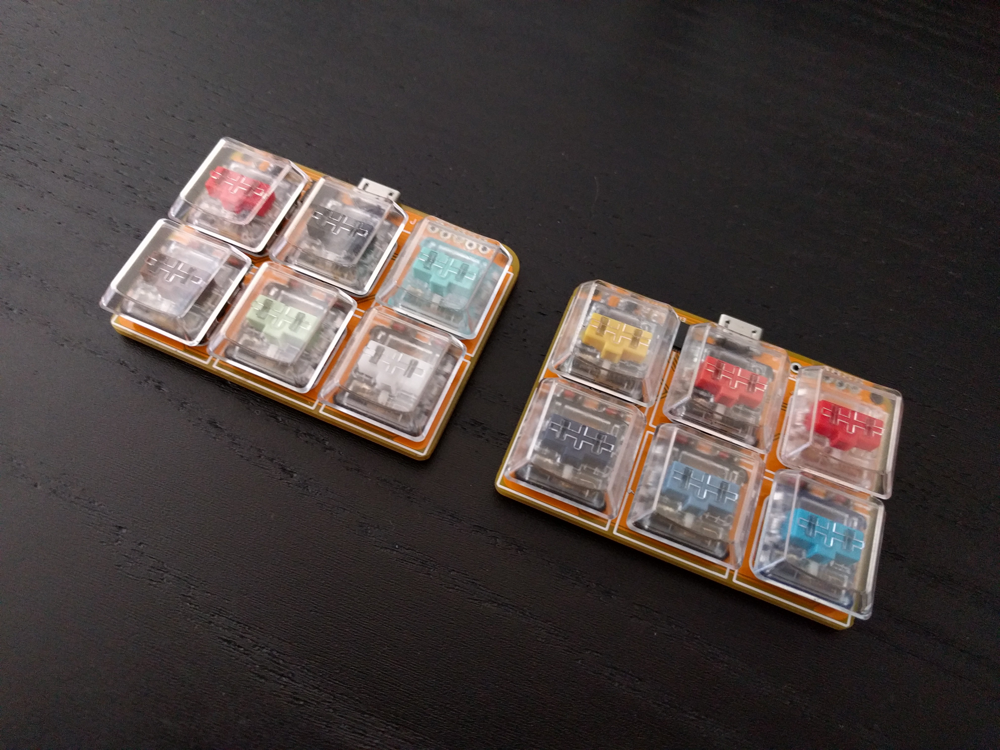

Switch Testers¶
Published on 2021-02-21 in Keeblet.
I just got a set of 13 different Kailh Choc switches, to see which ones are best for a given use case, and I needed to mount them to something — the Keeblet is just the perfect vehicle for this! Since the two red switches – Kailh Pro and Transparent Red — are practically identical from the point of view of feel, I only needed to make 2 new Keeblets, for a total of 12 switches:
The transparent key caps are perfect for this, because you can see which switch is which without having to remove them!